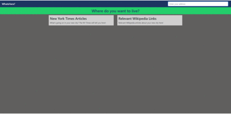
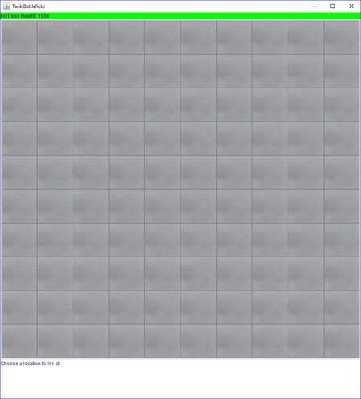

Portfolio




myExperience Usability Tested Mockups
SFU co-op website prototype created in Balsamiq.
I have been the sole developer for my church’s website since January 2017 when I was initially contracted to rebuild the entire site due to an aging design and user interface.
I started this project by developing the WordPress site locally using MAMP which provided me a way to visually present new web page designs to the team for feedback while keeping the old website online. This is because my church only had one available server to host the website on and require the old site to be available until the new one had all of its core functionalities implemented and the entire team was ready to make the transition. Our team decided to purchase a WordPress theme called Church Suite which provided all the features we needed such as sermon and event management. The user interface for each web page was mainly created using the WPBakery plugin that provided a wide selection of web elements that I could easily drop into a design. The Chrome DevTools allowed me to ensure that the new designs were responsive on mobile devices and assist with creating custom HTML and CSS code to alter elements that did not have a user-friendly way to do so in WordPress.
When the team was ready to make the transition, the new designed was uploaded to the new server using FTP. I had to ensure the server was properly configured to support the new CMS by changing settings such as memory limits and execution time. Through the cPanel administration portal, I accessed the database that was created by WordPress to re-link the domain. One issue I encountered after the site went live was slow loading times. This was caused by large images file sizes due to the lack of image compression. I was able to identify this issue by monitoring network activity in Chrome DevTools and running a benchmark in GTmetrix, a website optimization tool which provided insight on different issues that could improve site loading times.
SFU co-op website prototype created in Balsamiq.